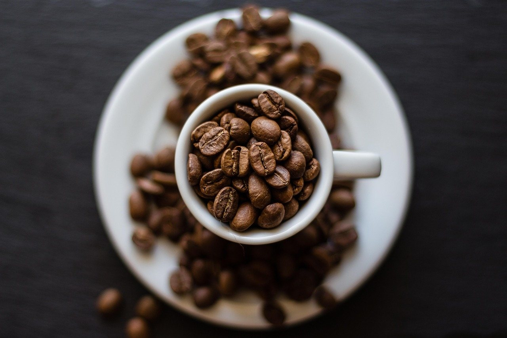

Old Port
On Milk Street, in the Old Port.
Mon–Fri · 7:30–3:00
About the counter
Two Portland spots, one menu, mismatched plates at both.
We're a neighborhood cafe with two Portland spots: Milk Street in the Old Port and Brighton Avenue.
Mornings are for breakfast sandwiches, burritos and scramblers. After that it's lunch, made to order as a sandwich, wrap or salad, with soup on the side if you want it.
Ordering for the office or a group? For orders of six or more, give the store a call and we'll get it ready.
Monday to Friday
Saturdays it's Brighton Ave only. Sundays, both cafes are closed.
Coffee's on, breakfast starts.
Same breakfast, on Milk Street.
Last call on egg & cheese and the scramblers.
Whole, half, or half with a cup of soup.
Coffee and espresso right up to then.

Open to close
Coffee and espresso drinks are on all day at both cafes. Breakfast stops at 11:30. Coffee doesn't.
Grab one with a bagel on the way in, or with half a sandwich and a cup of soup at two in the afternoon.
On Google
What people tend to mention:
Pick your counter
On Milk Street, in the Old Port.
Mon–Fri · 7:30–3:00
On Brighton Avenue, open Saturdays too.
Mon–Sat · 7:00–3:00
Maps, hours by day and a note form are on the contact page.
Feeding the whole office? Six or more, give us a call and we'll have it bagged and ready.